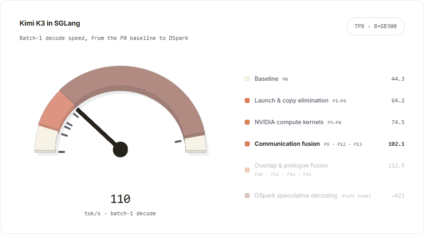
本文从 MHA、DeltaNet 一路讲到 KDA，梳理注意力机制的演进；解释 Kimi K3 的混合架构如何支撑 2.8 万亿参数和 100 万 token 上下文；并介绍 SGLang 如何通过统一内存池、分块流水线并行（chunked PP）和解码上下文并行（DCP）高效运行 K3。
单独打开本地图集（可用“上一张 / 下一张”浏览全部本地静态备用图）
查看静态备用图
Kimi K3 架构
K3 是一个总参数量 2.8 万亿的 MoE 模型，每个 token 激活 1040 亿参数，原生支持 100 万 token 上下文。K3 共有 93 层：69 层采用 KDA 线性注意力，24 层采用带门控的全局 MLA。第一层使用稠密 FFN，其余 92 层使用 Stable LatentMoE。93 层被划分为 8 个块，Attention Residual 在块之间聚合信息。
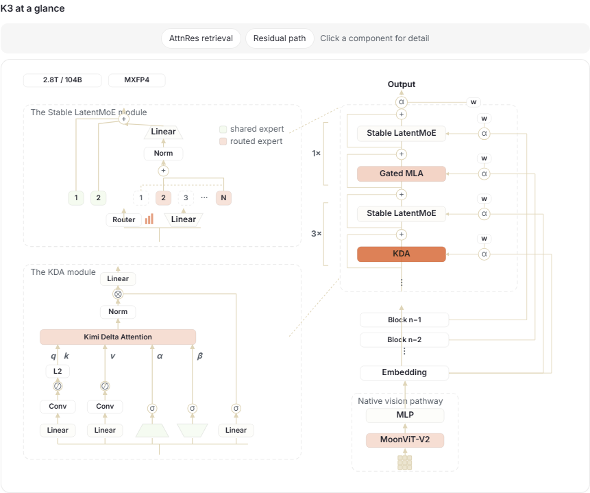
KV 缓存内存估算
MLA 和 MHA 的 KV 缓存都会随上下文增长。K3 的 24 个 MLA 层合计在每张 GPU 上每个 token 需要约 27 KB 的压缩 KV 缓存，平均每层约 1.125 KB。若 93 层全部使用 MLA，一个 100 万 token 请求在单张 GPU 上约需 105 GB（1.125 KB × 93 × 100 万）。相同形状的未压缩 MHA 每层每个 token 需要 48 KB（96 个头 × 128 维 × K/V × bf16），超过 MLA 潜变量缓存的 40 倍。
因此，K3 按 3 层 KDA、1 层 MLA 交错排列。KDA 的循环状态大小固定，不随上下文增长；每张 GPU 上每个请求约占 54 MB，并在每一步原地更新。MLA 则保留全局注意力。模型不使用显式位置编码（NoPE），位置信息由 KDA 的递归更新隐式表达。
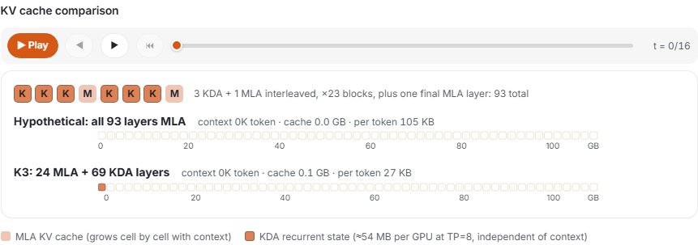
注意力机制详解：经典 MHA
在普通 MHA 中，解码第 $t$ 个 token 时，模型先把它的 KV 追加到缓存中，再分三步读取全部 $t$ 个条目：
- 打分：$z_{t,i}=\frac{q_t\cdot k_i}{\sqrt{d_k}}$，其中 $i\le t$。
- 归一化：$Z=\sum_{j=1}^{t}\exp(z_{t,j})$，$a_{t,i}=\exp(z_{t,i})/Z$。
- 聚合：$o_t=\sum_{i=1}^{t}a_{t,i}v_i$。
长度为 $N$ 的序列大约要执行 $N^2/2$ 次点积，计算复杂度为 $O(N^2)$，缓存复杂度为 $O(N)$。
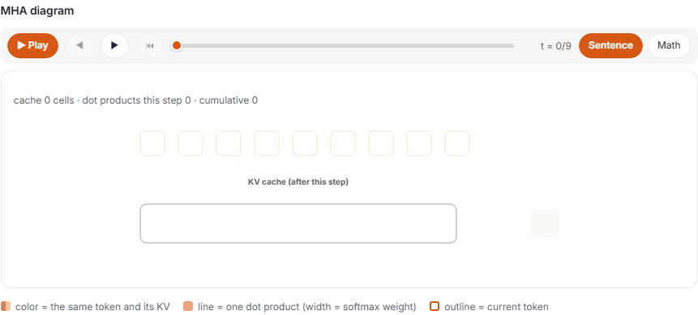
Softmax 注意力能够按位置读取历史信息，因此拥有最完整的全局记忆；代价是每生成一个新 token 都要重新扫描并保存全部历史。
注意力机制详解：线性注意力
线性注意力不再为每个 token 保留独立 KV，而是把历史累积到固定大小的矩阵：
$$S=\sum_i k_i v_i^{\top}.$$
$k$ 决定写入方向，$v$ 是写入内容，$q$ 通过 $o=S^{\top}q$ 读取。无论上下文多长，每一步都只读写固定大小的 $S$。
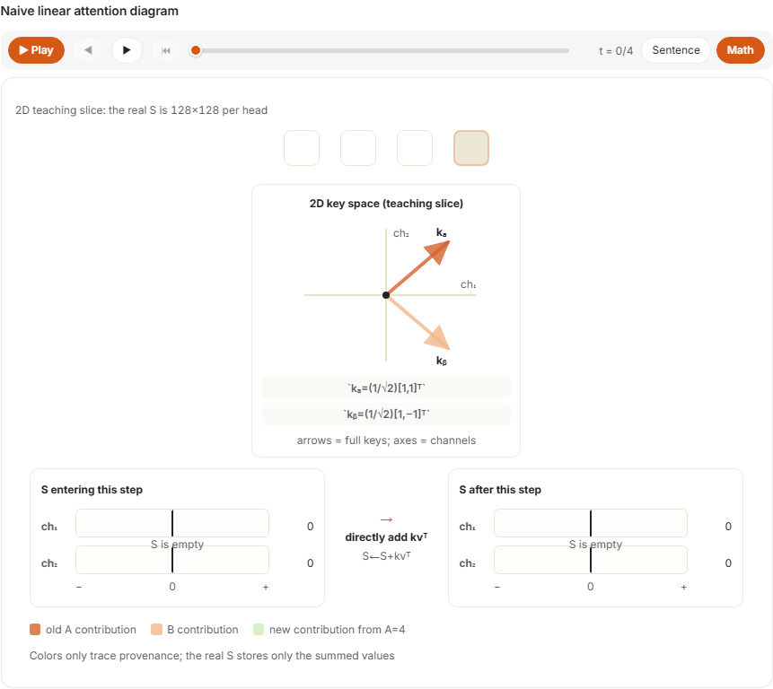
MHA 中每个历史 token 都有自己的 KV 位置；线性注意力状态 $S$ 没有 token 位置轴，因此读出会把所有历史写入混合在同一个固定状态中。
注意力机制详解：DeltaNet
朴素线性注意力只会累加，不会覆盖旧值。同一个键方向先写入 1、再写入 4，下一次读取会得到 $1+4$。在长达 100 万 token 的序列中，固定容量状态可能无法把不同上下文中的写入完全分开。
DeltaNet 根据预测误差编辑状态。它引入标量门 $\beta_t$ 控制更新强度。先读取已有预测：
$$r_{\text{old}}=S_{t-1}^{\top}k_t,$$
再写入目标值与预测值之差：
$$S_t=S_{t-1}+\beta_tk_t(v_t-r_{\text{old}})^{\top}.$$
若键已归一化，新读出为：
$$r_{\text{new}}=(1-\beta_t)r_{\text{old}}+\beta_tv_t.$$
$\beta_t=1$ 表示完全替换，$\beta_t=0$ 表示不改写。
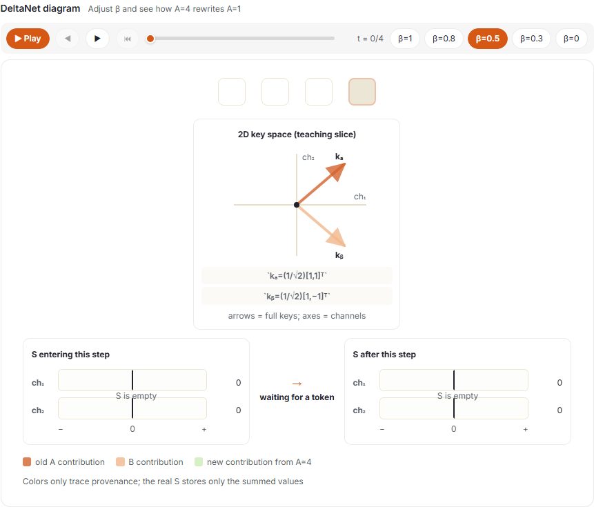
同方向改写得到解决后，仍有容量问题：无关键向量通常并不完全正交，一个方向的写入会投影到另一个方向并产生串扰。
假设 $S=k_av_a^{\top}+k_bv_b^{\top}$，用 $q_a=k_a$ 读取：
$$o_a=S^{\top}q_a=v_a+\cos\theta\cdot v_b,$$
其中 $\theta$ 是两个键的夹角，第二项就是 B 泄漏到 A 中的串扰。一般情况下，$o(q)=\sum_i(k_i^{\top}q)v_i$，干扰由 Gram 矩阵 $G_{ij}=k_i^{\top}k_j$ 决定。$\mathbb{R}^{d_k}$ 最多容纳 $d_k$ 个两两正交方向，因此固定大小状态中的串扰无法消除，只能管理。
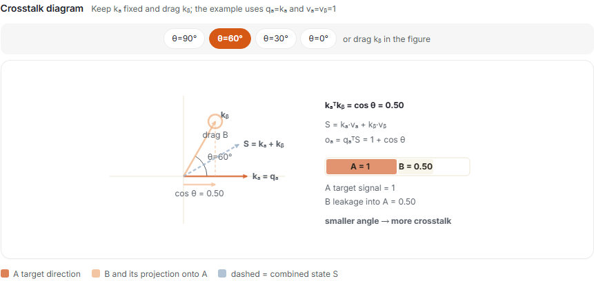
注意力机制详解：KDA
KDA 以通道为单位门控。K3 的隐藏维度为 7168；96 个 KDA 头分别把它投影到 128 维，一个通道就是这个投影空间中的一个维度。键的第 $j$ 个通道决定内容写入 $S$ 第 $j$ 行时的系数。
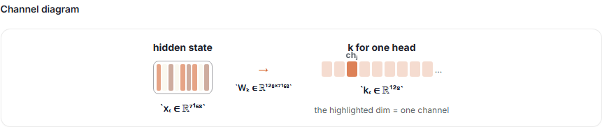
KDA 为每个 token 和注意力头生成向量门 $\alpha_t$，用 $\mathrm{Diag}(\alpha_t)$ 缩放旧状态的各个通道，再执行 DeltaNet 改写：
$$ S_t=\big(I-\beta_tk_tk_t^{\top}\big)\mathrm{Diag}(\alpha_t)S_{t-1}+\beta_tk_tv_t^{\top}. $$
其中 $\alpha_t\in(0,1)^{d_k}$，$\beta_t\in(0,1)$。把更新拆成两步：
$$\tilde S=\mathrm{Diag}(\alpha_t)S_{t-1},$$
$$S_t=\tilde S+\beta_tk_t(v_t-\tilde S^{\top}k_t)^{\top}.$$
展开递归可得：
$$ S_t=\sum_{s\le t}\left[\prod_{u=s+1}^{t}\big(I-\beta_uk_uk_u^{\top}\big)\mathrm{Diag}(\alpha_u)\right]\beta_sk_sv_s^{\top}. $$
越早的写入经历越多次门控和改写，衰减随距离累积，这让 K3 可以不使用 RoPE。K3 还通过缩放 Sigmoid 为对数衰减设置下限 $g_{\min}=-5$，使每一步保留比例高于 $e^{-5}\approx6.7\times10^{-3}$，从而控制分块计算的数值范围并让分块在 Tensor Core 上高效运行。
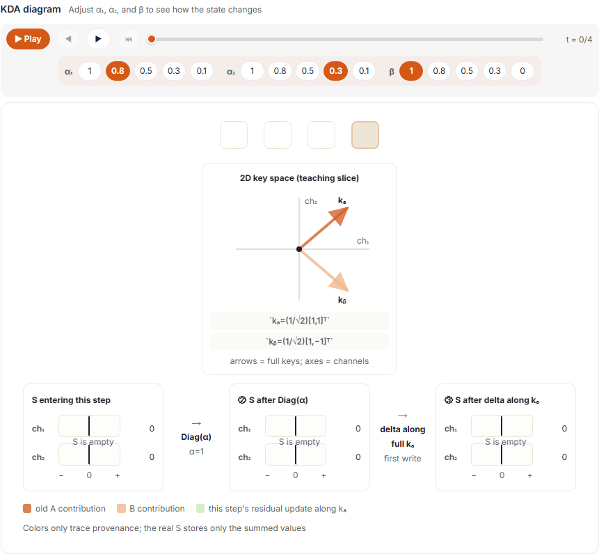
RoPE 用固定旋转显式编码位置；KDA 则通过可学习、依赖输入的衰减隐式建模位置。
Attention Residual
普通 Transformer 的残差流像一份从底层传到顶层的草稿，每层都修改同一页。到很深的层时，浅层细节已经和多次后续更新混合。
Attention Residual 额外保留历史版本。K3 把 93 层划分为 8 个块，块内各层输出累加为一个块摘要。每层用自己的伪查询，对嵌入、此前块摘要，以及当前块截至此处的部分和进行加权，混合结果就是该层输入。
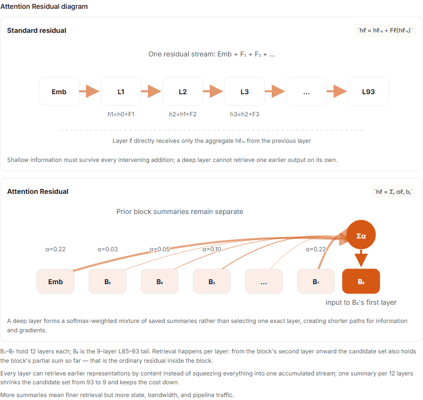
完整 AttnRes 为每个 token 保存 $L$ 个宽度为 $d$ 的层输出，复杂度为 $O(Ld)$。分块版本保存 $N=\lceil L/12\rceil$ 个摘要和嵌入，复杂度为 $O(Nd)$。K3 的 $L=93$，因此保存 8 个块摘要，加上嵌入共 $9\times7168$ 个数。分块把候选数从 93 降到 9，但 93 层仍各自执行一次检索。论文报告典型推理工作负载的端到端延迟开销低于 2%，训练端开销低于 4%。
LatentMoE
除第一层外，每个 FFN 都使用 MoE：每个 token 从 896 个路由专家中选 16 个，另有 2 个共享专家始终激活。路由专家选择率为 $16/896\approx1.8%$；整个模型每个 token 激活参数占比为 $104\text{B}/2.8\text{T}\approx3.7%$。
路由仍基于完整的 7168 维隐藏状态打分，但专家在 3584 维潜空间中计算，再投影回完整宽度，从而把 All-to-All 分发流量和专家权重规模减半。
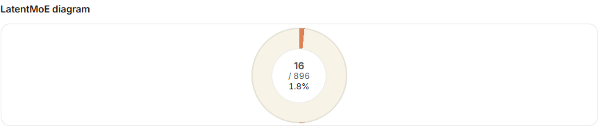
SGLang 的首日适配
K3 会产生两类生命周期不同的推理状态：
| MLA（24 层） | KDA（69 层） | |
|---|---|---|
| 状态形态 | KV 缓存，按 token 追加 | 固定大小的循环状态 |
| 增长方式 | 每张 GPU 每个 token 约 27 KB | TP=8 时每张 GPU 每个请求约 54 MB，每步原地覆盖 |
RadixAttention：为 KDA 状态提供前缀缓存
传统 RadixAttention 可以共享只追加的注意力 KV；KDA 状态却会原地覆盖。SGLang 不让请求修改 Radix 树中的共享状态：树中保存只读检查点，命中前缀后通过写时复制恢复到请求私有工作槽，前向只修改副本。
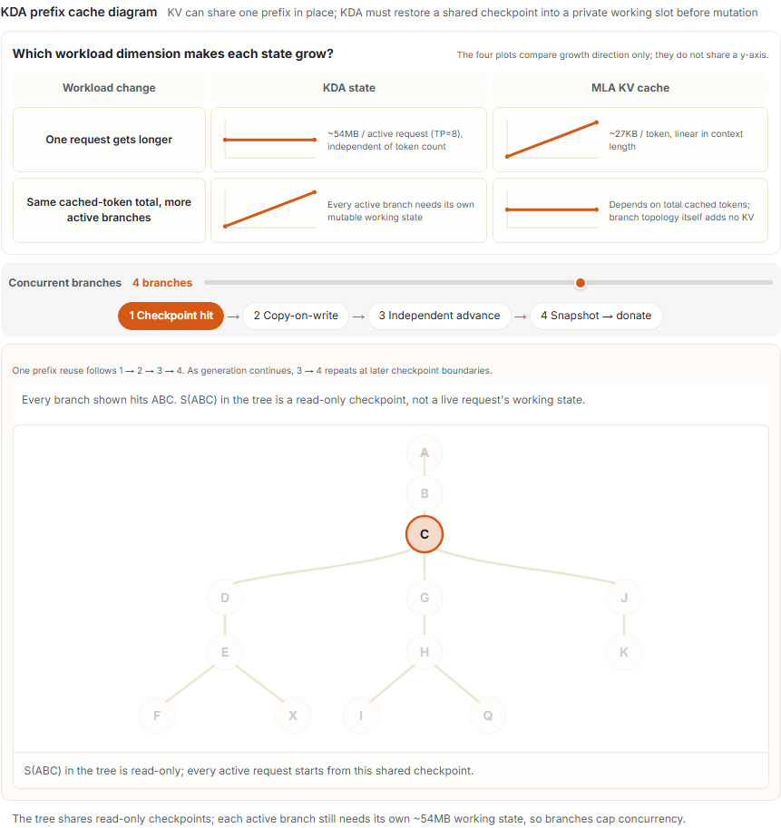
两类状态的内存管理
静态划分 KDA 和 MLA 区域时，负载偏离预估会导致一个区域已满、另一个仍空闲。SGLang 把二者放进同一个池：KDA 块从左侧分配，MLA 页从右侧分配，中间空闲空间共享。出现空洞时，用末端块填补，使两端保持紧凑。该功能通过 --enable-unified-memory 启用。
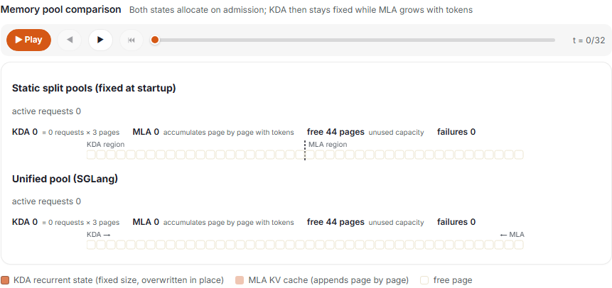
分块流水线预填充
TP8 让八张 GPU 同步处理同一份预填充工作，每层都需要 AllReduce。分块 PP8 则把不同层段分配给 G1–G8，让不同 GPU 同时处理不同提示块，阶段间只传激活并与下一块计算重叠。长上下文下，流水线填充和排空开销会被摊薄。
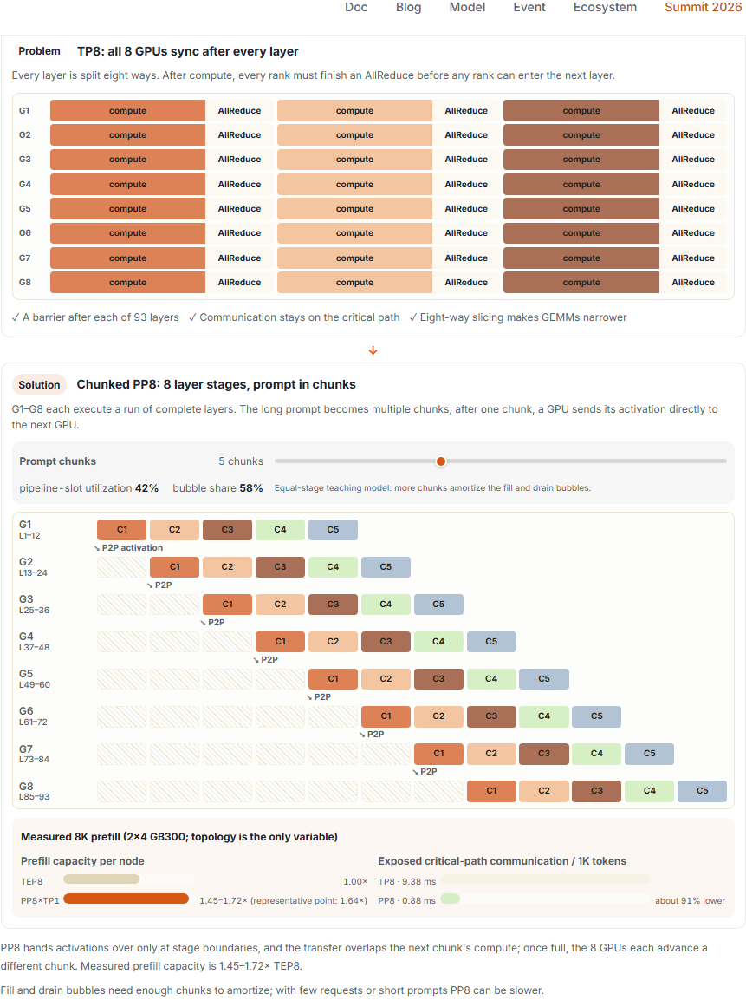
解码通常每步只有一个新 token，不足以填满 PP8，因此 TP8 更合适。常见的预填充分离部署是“PP8 预填充 → TP8/DCP8 解码”。
解码上下文并行（DCP）
MLA 多个注意力头共享一个压缩 KV 潜变量，TP8 的每个 rank 都必须复制完整 KV。DCP 改为按 token 位置切分，每张 GPU 只在本地 $1/N$ KV 上计算部分注意力，再用一次打包 All-to-All 合并结果。
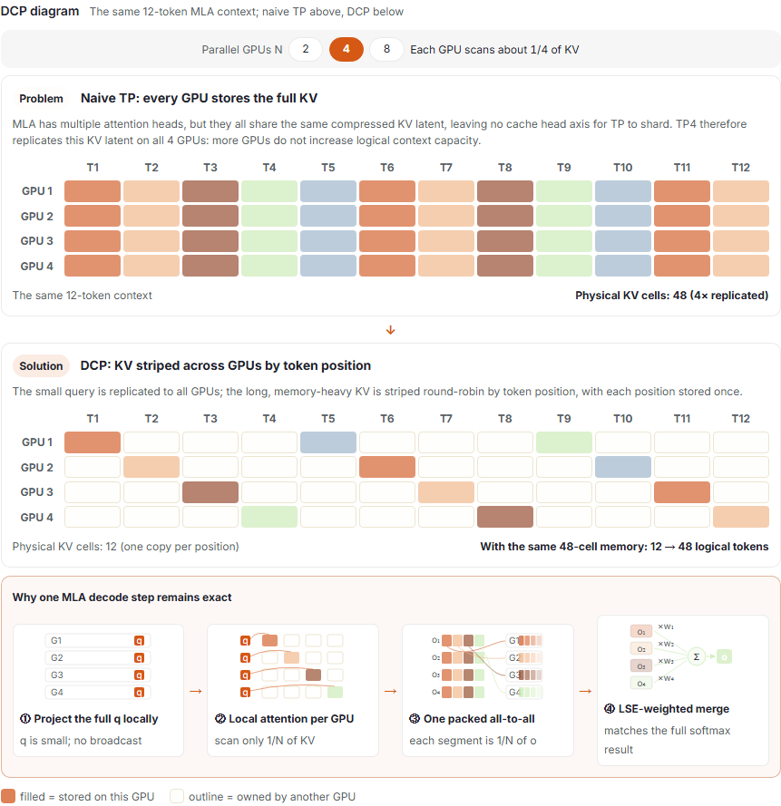
DCP 主要提高容量和并发。TP8+DCP8 仍只用 8 张 GPU，但 K3 的逻辑容量从约 150 万 token 增至 1220 万 token，约为 7.9 倍；48 个智能体会话时达到 541 token/s。代价是每个 MLA 层增加一次 All-to-All。
性能数据与基准结果
15 项内核和通信优化把非推测式 Batch-1 解码从 44.3 token/s 提升到 112.5 token/s；DSpark 推测解码达到约 423 token/s。
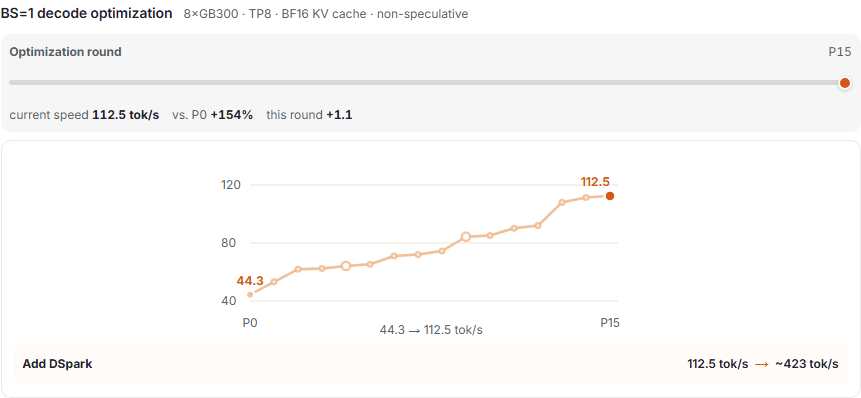
在预填充分离部署中，总吞吐量与单用户速度之间存在权衡，不同目标对应不同并行布局：
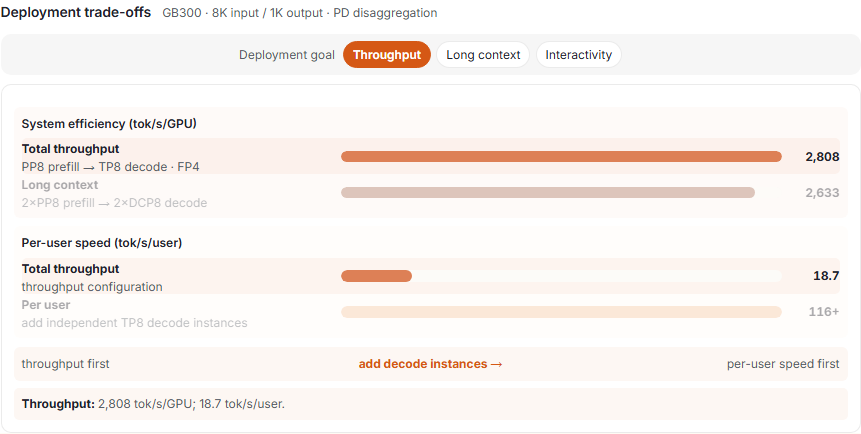
致谢
Kimi K3 首日支持由 RadixArk 的 SGLang 与 Miles 团队、Moonshot AI 团队，以及 NVIDIA、AMD、Approaching AI、Baseten 和 Modal 共同完成。
- **AMD：**Wun-guo Huang、Xinyi Song、Hai Xiao、Soga Lin、Duyi Wang、Thomas Wang
- **Approaching AI：**Huanming Shen、Xiaohao Zhang、Nan Li、Mingxing Zhang
感谢 DigitalOcean 提供 AMD 测试实例，也感谢 Google Cloud、DigitalOcean、Nebius、fal、RunPod、DeepInfra 和 GMI Cloud 使用 SGLang 提供 Kimi K3 服务。
延伸阅读
本可视化教程由 Yichi Zhang 与 SGLang 团队撰写。